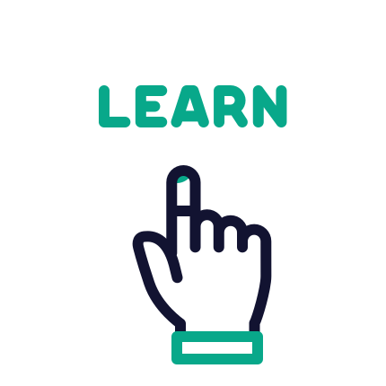

AN INSTITUTE OF YOUR BEST CHOICE
A Group holding Maximum AUTONOMOUS Institutions enabling Unique Design Thinking Curriculum
Top notch 2200+ Placement record and 300+ Recruiters, with exclusive 4 career tracks
All Institutions Accredited with NAAC 'A+' Grade & above
Five Pillars Based Learning Space that provides a Unique Life Style through SPINE Student Activity Center
Incredible Scholarship opportunity with work-while-learn programs
Engine (DT) that drives Education Solving Industrial Problems using Innovation Technologies
Youth leadership program is a special path for students in SNS to build a peculiar platform based on their talents. The program develops a unique way to find and groom the student’s inherent talents and showcase them to the world. YLP creates a path where the students turned into qualified leaders with special skills.
Unique hub enhancing Business connections among Industries and students
FIVE PILLARS THAT BUILD OVERALL GROWTH